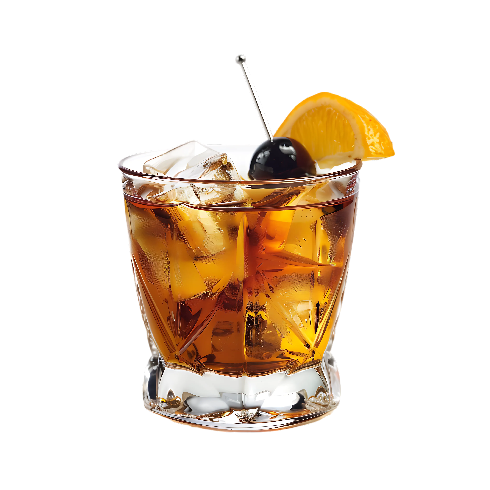

Old Fashioned
Tiempo: 5 minutos · Dificultad: Fácil · Porciones: 1 cóctel

Preparación
- Coloca el terrón de azúcar en el fondo de un vaso bajo de whisky (vaso Rocks u Old Fashioned).
- Añade las 2 a 3 gotas de amargo de Angostura directamente sobre el azúcar y agrega unas gotas de agua.
- Con ayuda de un macerador o cuchara, tritura bien el azúcar hasta disolverlo casi por completo en el amargo.
- Agrega un cubo de hielo grande al vaso.
- Vierte los 60 ml de Bourbon o Whiskey sobre el hielo.
- Remueve suavemente con una cuchara de bar durante unos 20 a 30 segundos para enfriar y diluir ligeramente la mezcla.
- Tuerce la piel de naranja sobre la superficie del vaso para liberar sus aceites esenciales y pásala por el borde del vaso antes de dejarla caer dentro.
- Decora con una cereza al marasquino en un palillo y sirve de inmediato.
¡Un coctel clásico, sofisticado y atemporal para disfrutar despacio!
Tips de nuestra comunidad
Descubre recetas, combinaciones y secretos compartidos por otros amantes de la cocina. ¿Tienes un secreto de cocina?
Compártelo con la comunidad.
Usa un único cubo de hielo grande y compacto; así la bebida se mantendrá fría durante más tiempo sin diluirse tan rápido.
El paso crucial es exprimir la cáscara de naranja justo sobre el vaso; esos aceites esenciales cambian completamente el aroma del cóctel.